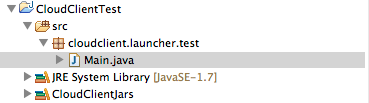
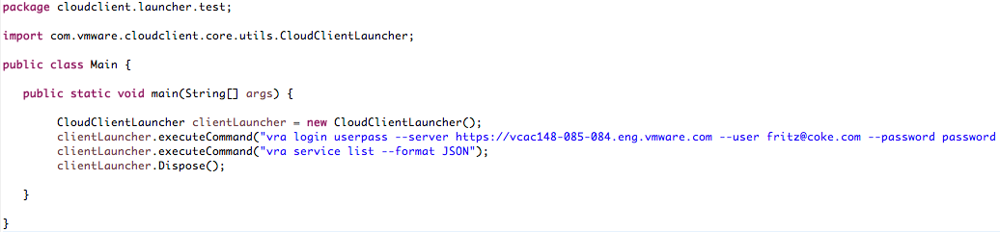

Libraries in the CloudClient lib folder should be added to the Java Environment SpringSource Suite (STS)
- Open STS & create a new java project or use an existing one
- Select "Build Path"
- Select "Add Libraries"
- Select "User Library"
- Create new user library (called CloudClientJars for example)
- Select External Jars and add to CloudClientJars
- Browse to the CloudClient lib folder on your filesystem and select all jar files

Create your first CloudClient project
CloudClient commands can be executed from the CloudClientLauncher class and the results can be queried, use the --format JSON parameter to parse JSON responses
The below images shows how to login and return all vCAC Service Items in JSON format
